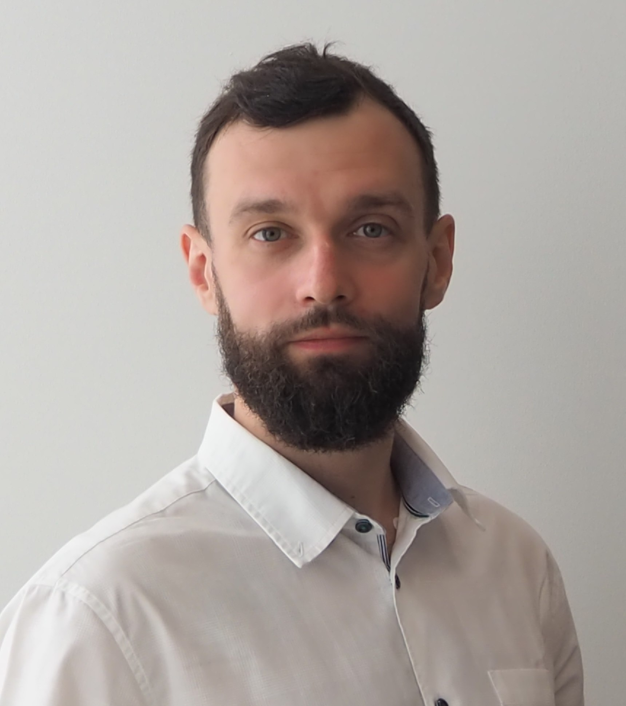

Viacheslav Barinov

Moscow, Russia
My major activity – C/C++ development on Linux-based platforms.
I really enjoy the OpenSource
software and interaction with community and do my best to contribute to OpenSource projects which I'm interested in or
have to deal with at day-time job.
Tizenhttps://tizen.org
Tizen toolchain support and enhancement.
Our team is working on toolchain support and enhancement accordingly to requests of Samsung developers all over the
world and own vision of perfect toolchain. We are the guys who created an ARM64 Tizen 3.0 in the beginning of 2014
and stabilized the OS even before first 64bit Android release, and started RISC-V version in 2023.
Digging inside GCC and Binutils to find why stack trace tells lies to developers, debugging on-device soft using gdb
through port forwarded using netcat over Wi-Fi because kernel is not finished and there is no other way to connect,
finding a way to implement needed feature the right way instead of workaround in the limited time–that's about me.
After promotion to project lead the task set widened with looking for appropriate customer for such experience
and directing team members' fun into scope needed by commercial divisions. Six years of successful projects say
I'm not totally useless in this field as well.
Our team was invoked into code analysis movement and I joined dynamic analysis forces to improve and promote sanitizers
among Samsung. Now, as far as I know, we're the first team who performed full-system sanitization (not sure if someone
tried that anyway).
2021 - still hereStaff Engineer, Samsung Research Russia, Moscow, RussiaRust evangelism among SRR developers, research projects on new ARM and RISC-V platforms
2017 - 2021Staff Engineer/Team Lead, Samsung Research Russia, Moscow, RussiaToolchain improvement, dynamic software analysis research, Improving Tizen
code base from toolchain point of view: dynamic analysis (sanitizers), new
optimizations. Applying dynamic binary analysis technologies to embedded
systems (Tizen RT)
2014 - 2017Leading Engineer/Team Lead, Samsung Research Russia, Moscow, RussiaToolchain support and enhancement. Improving Tizen code base from toolchain point of view: dynamic analysis
(sanitizers), new optimizations
2013 - 2014Leading Engineer/Team Lead, Samsung Research Russia, Moscow, RussiaToolchain support (GCC compatibility issues maintaining and bugfixes)
Solving architecture related issues (porting from arm to arm64)
Feb 2012 - 2013Software Engineer, Samsung Research Russia, Moscow, RussiaNative mobile software optimization (C/C++)
Profiling and optimization tool development (Linux kernel module profiling part, python GUI and statistical and reporting module)
Software development.
Sep 2006 - Feb 2012Expert Engineer, InterRadioService LLC., Moscow, RussiaHardware engineering
Software development (mostly for hardware support).
Maintaining compatibility features for ancient (40 yrs and more) devices.
Fieldwork with hardware and support during full-scale tests.
ExpertC, C++
IntermediateRust, Python, ARM Assembly Language
BasicPerl, x86 Assembly Language
DevelopmentBuild system related tools: Makefile, m4, cmake, shell scripting, the GNU tool set built around
traditional *nix software development.
DebugLow-level system debug: gdb, kdb, U-Boot debug
GUIQt (C++ and Python versions), basic web-interface
OSLinux-based (from LFS and Gentoo to full rpm-based Tizen)
VCSgit, svn
OBSDeep knowledge of service internals, have experience in setup, configuration and bootstrapping from
scratch for rpm-based Tizen OS
GeneralSetting up and maintaining all servers needed for work – CI, source hosting, web-interfaces just need enough time.
20202020 Ivannikov ISPRAS Open Conference, https://ieeexplore.ieee.org/document/9394129Report Applying compiler-based binary watermarking technology to
ensure binary compatibility in GNU/Linux distribution.
Published in Proceedings of 2020 Ivannikov ISPRAS Open Conference
(ISPRAS).
DOI: 10.1109/ISPRAS51486.2020.00009.
2019GNU Tools Cauldron, https://gcc.gnu.org/wiki/cauldron2019Report Annotating std::string with AddressSanitizer
2017GNU Tools Cauldron, https://gcc.gnu.org/wiki/cauldron2017Report Applying GNU GCC Address Sanitizer to whole Linux distribution
20172017 Ivannikov ISPRAS Open Conference, https://ieeexplore.ieee.org/document/8273297Report Applying GCC-Based Address Sanitizer Dynamic Analysis
Technology to Tizen OS .
Published in Proceedings of 2017 Ivannikov ISPRAS Open Conference
(ISPRAS).
DOI: 10.1109/ISPRAS.2017.00015.
2015People Management, http://www.luxoft-training.com/, Moscow, RussiaProject manager tasks related to grouping people into team
2014Project Management, http://www.luxoft-training.com/, Moscow, RussiaProject manager quickstart
2005 - 2011Electronics Engineering, Bauman's Moscow State Technical UniversityM.Sc. in Electronics device and systems engineering